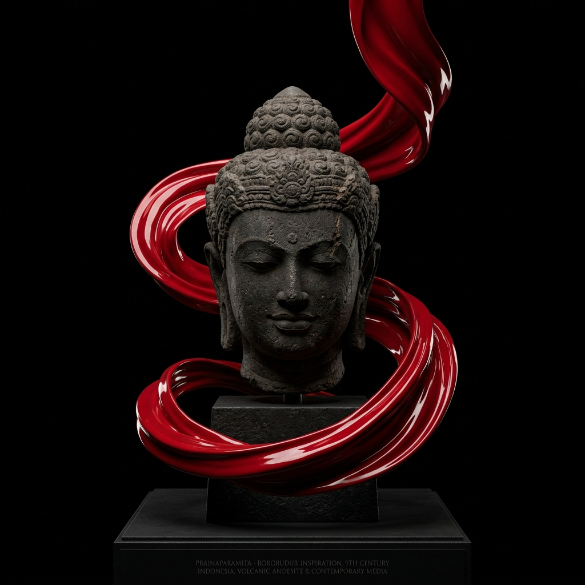

Lelana Museum · Historiografi Jawa Tengah
Historiografi & Asal-Usul Tempat Wisata
Tempat Wisata · Pembangunan Purba Abad VII Masehi hingga Wisata Global
Sejarah tempat wisata pusaka Jawa Tengah berawal dari abad ke-7 hingga ke-9 Masehi saat dataran tinggi Dieng dan lembah Kedu-Prambanan dipilih sebagai poros spiritual tanah Jawa. Dieng menjadi percandian dewata tertua (abad VII M), disusul pembangunan kolosal Candi Borobudur oleh Dinasti Syailendra (770–825 M) dengan 2.672 relief andesit, serta Candi Prambanan setinggi 47 meter oleh Dinasti Sanjaya (856 M)...
Pilih kartu destinasi 01–04 di bawah untuk membaca artikel sejarah lengkap

Mahakarya Pahat Andesit & Stupa Mandala · Abad VII M – Sekarang (UNESCO World Heritage)